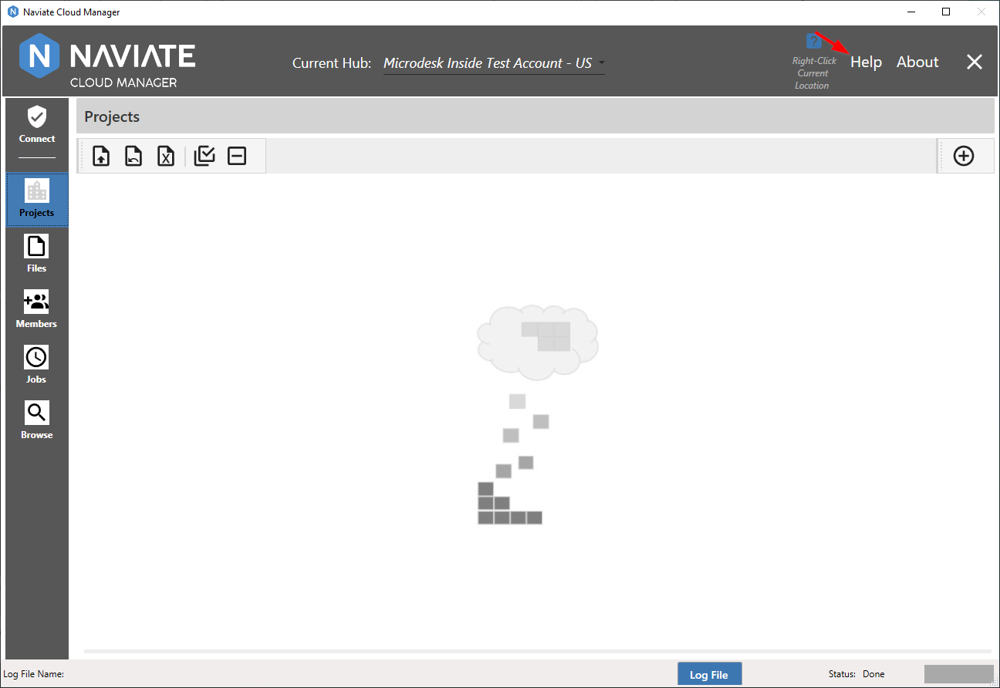
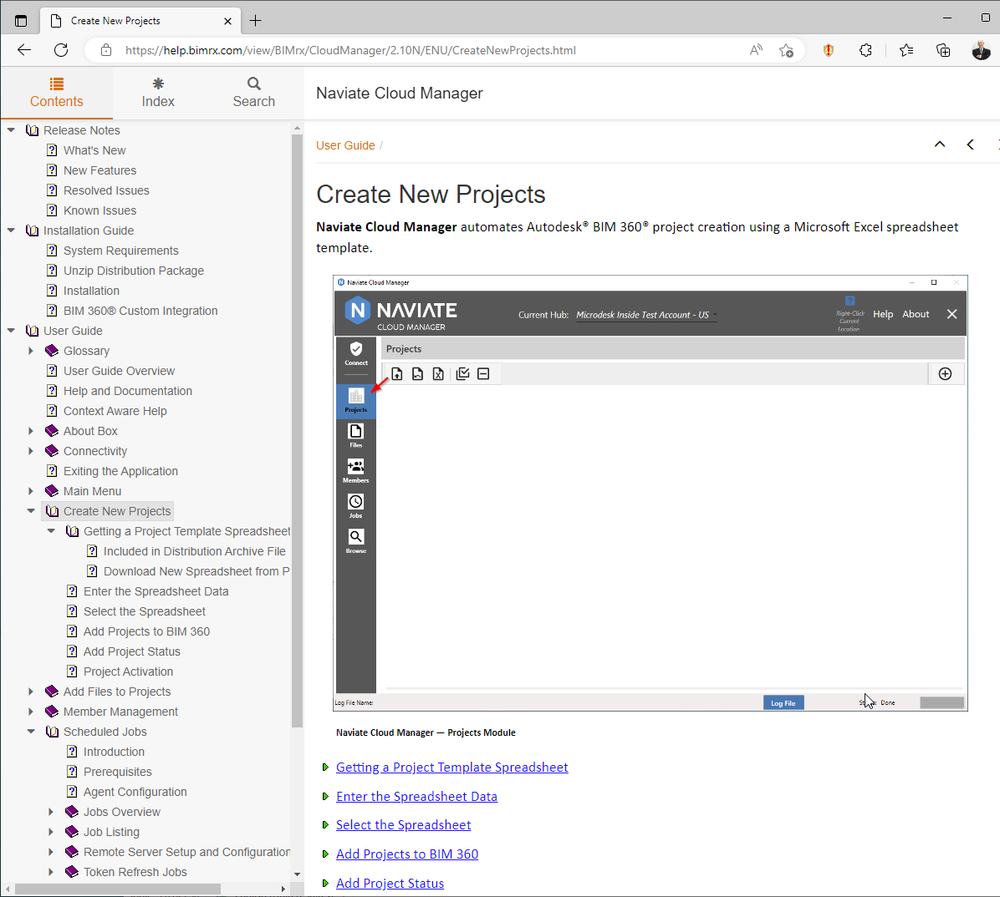
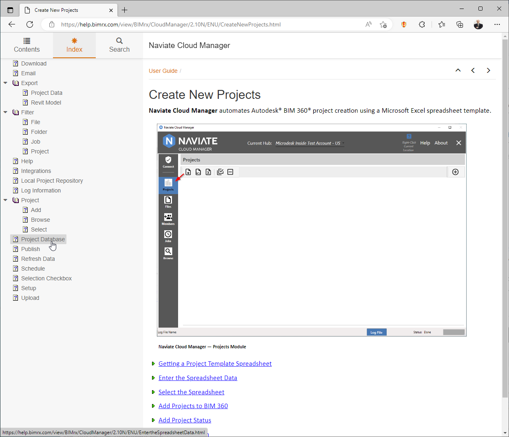
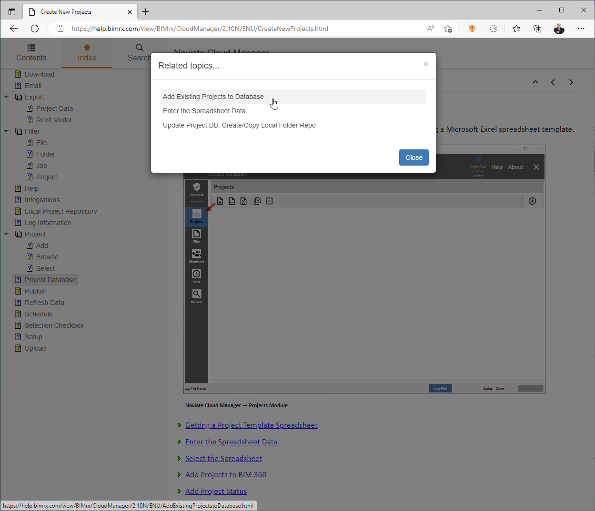
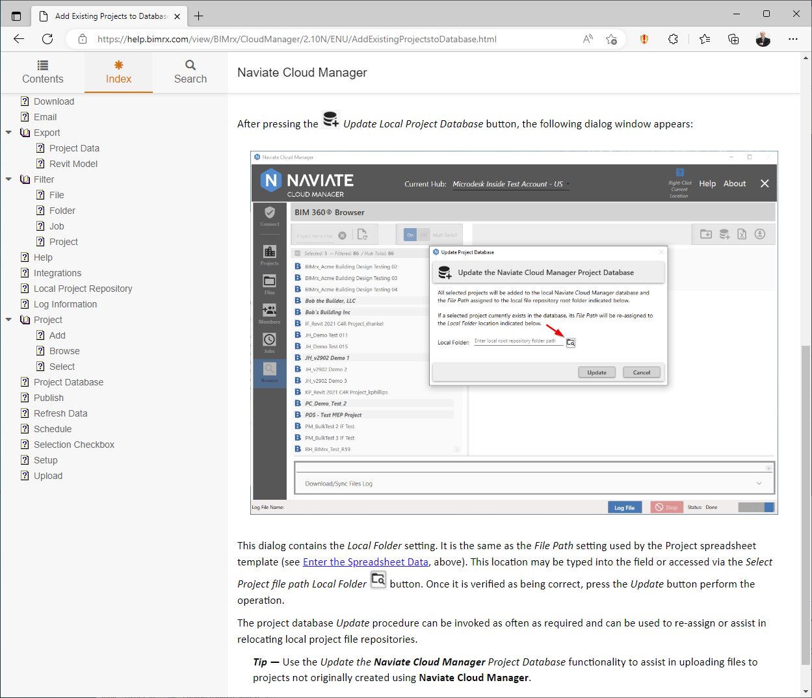
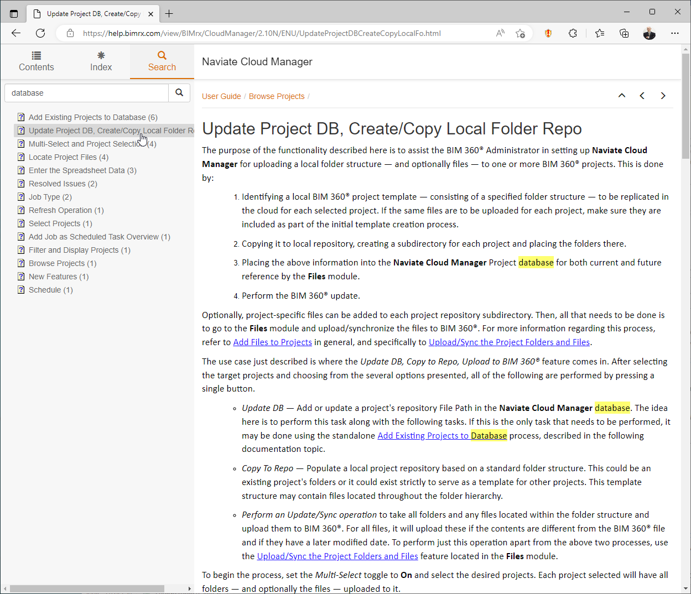
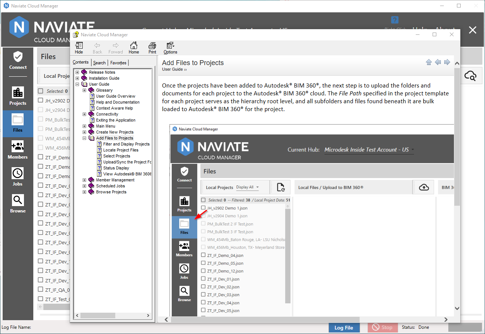

Help and Documentation
Naviate Cloud Manager provides full documentation — including Release Notes and Installation Guide— as part of the integrated Help system. Deployed as a context-sensitive Help system, this thorough and comprehensive Help consists of the complete Naviate Cloud Manager documentation.
Wherever the user is in Naviate Cloud Manager, the Help button is always available at the upper right corner of the screen.
In addition to being always available, the Help system also knows the current location within the system. For example, when Help is pressed while in the Projects module...

the Projects module documentation is accessed:

The Help Documentation is presented as a series of web pages and appears in the designated default browser, for example, Google Chrome, MS Edge, etc. Once the Help documentation has been accessed and the user is located on the page, they are free to navigate wherever they like within the User Guide. To assist navigation, the Help Documentation includes a table of contents, Index, Search capability and embedded navigation hyperlinks.
As shown above, the Contents tab allows easy navigation using the treeview main menu at the left side of the form. However, there are times when a non-hierarchical approach to querying the data is called for. In this case, the Index is available for cross-referencing the User Guide content.
Let's say, for example, we noticed that when we are adding a new Project, we are able to specify a project database entry for a local project file repository, for use in uploading files to the project once created. That got us thinking about uploading files to existing projects. As an alternative to scanning the entire table of contents, a logical place to begin this search is the Index.

Here we find an entry for Project Database which, when clicked, produces the following options:

Selecting the first choice takes us directly to the Browse module and gives us the answer we are looking for.

Finally, another option is the Search tab. By simply typing in a keyword, all text in the User Guide is searched, providing complete results.

Please note the search word(s), here database, is highlighted every place it is found in the text.
While the Index represents intentionally grouped items that are selected for relevance — regardless of the vocabulary used — the Search relies strictly on the word or words being searched. What's important to note here is that neither approach will always be the best one in every situation. Rather, one method will be the best in one case while the other method will make more sense in a different situation.
Tip — Keep in mind there are three different ways to find specific information in the Naviate Cloud Manager User Guide. Always think in terms of what is the best tool to use in a given situation. Also, keep in mind the fourth approach, which is the Context Aware lookup from within the application itself.
Because the Help/Documentation is deployed as a web service, there are several additional benefits. First, it is always available via the web browser, even when Naviate Cloud Manager isn't running. Second, as it is updated on a regular basis by Symetri, there is no need to download, perform an update or re-install. It always contains the most recent updates, including Release Notes for the most recent versions.
Tip — Save the Help system web link as a bookmark or shortcut from your browser. This will provide access at any time — even when not using Naviate Cloud Manager.
If, for whatever reason, access to the online help is not available, Naviate Cloud Manager also includes a compiled version of the Help Documentation as a backup. Pressing the same Help button without web availability produces the following result.

As shown above, the embedded Help Documentation is delivered in standard, Microsoft compiled Help file document (CHM format). It supports all the expected features, such as Table of Contents, Search, Favorites, Print, etc. It contains the identical content provided in the Web documentation/help.